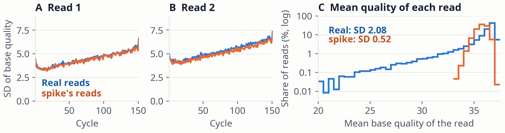

Figure 12. The reads of Figure 11. A, B: standard deviation (SD) of base quality at each cycle. C: each read's mean base quality, both mates (0.5 Q bins, log scale; zero counts not drawn; 7 real reads below Q20 in the first bin).
Control: a first-order chain fitted to the real reads in this window set gives SD 0.55 for C. Shuffling real qualities across reads within each cycle gives 0.46.
| Measure | Real (n = 23,832) | spike (n = 13,016) |
|---|---|---|
| SD, all bases | 4.96 (4.91–5.01) | 4.82 (4.80–4.84) |
| SD of read means | 2.08 (2.03–2.13) | 0.52 (0.51–0.52) |
| Reads all Q37 | 5.5% (5.2–5.8%) | 0.02% (0.01–0.07%) |
| Read mean below Q33 | 8.4% (8.0–8.7%) | 0% (0–0.03%) |
Table 4. 95% CIs: bootstrap over reads for SDs, Wilson for shares.
spike · Results · 19 / 25